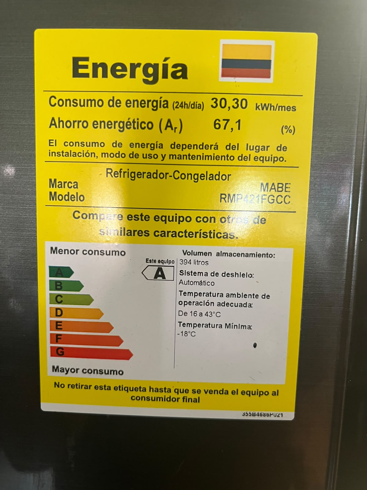
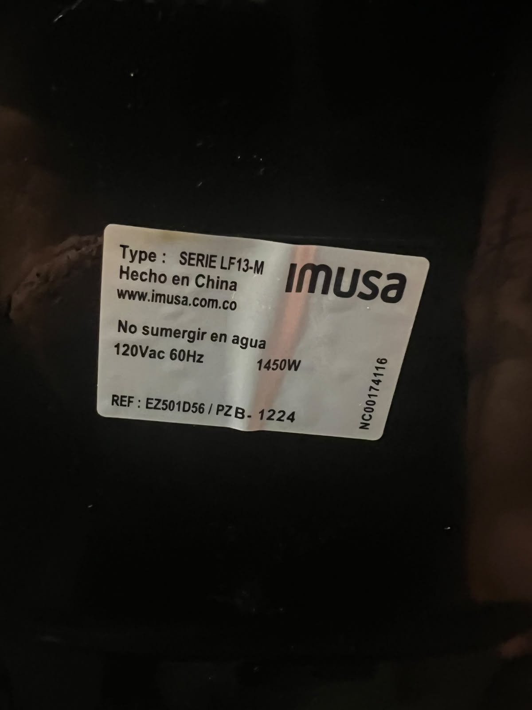
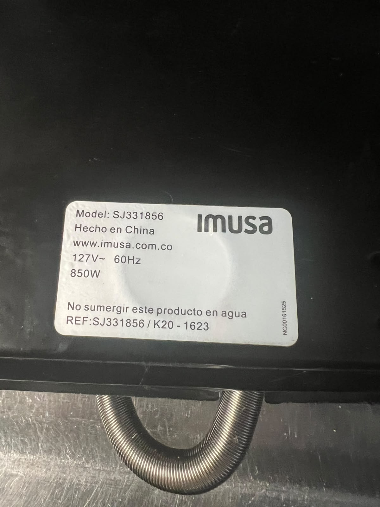
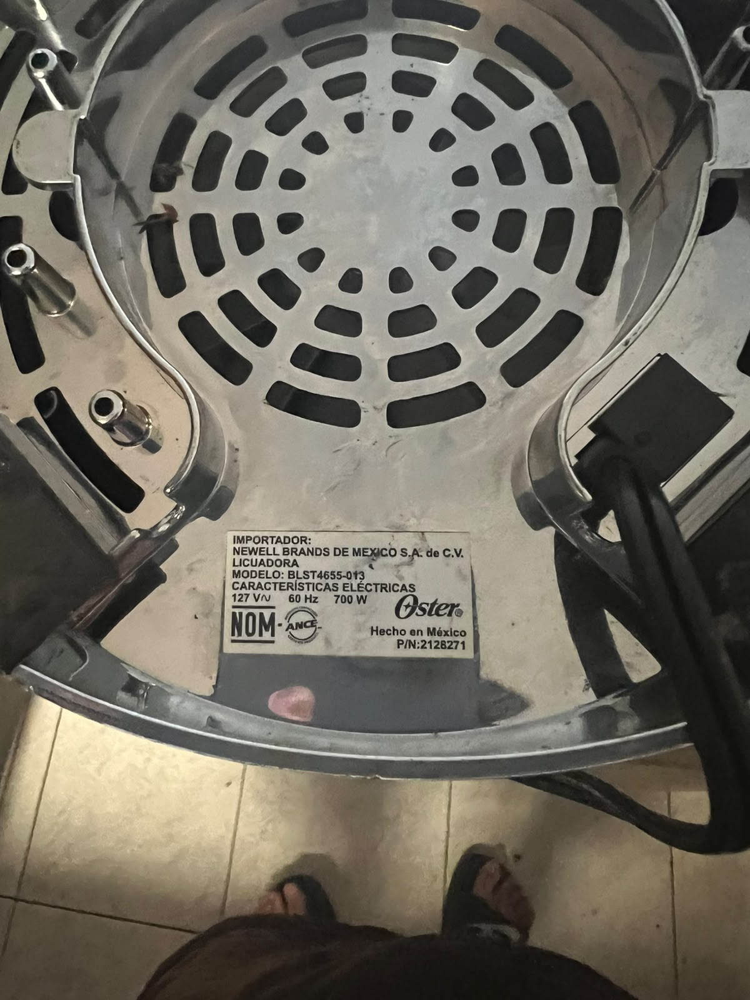
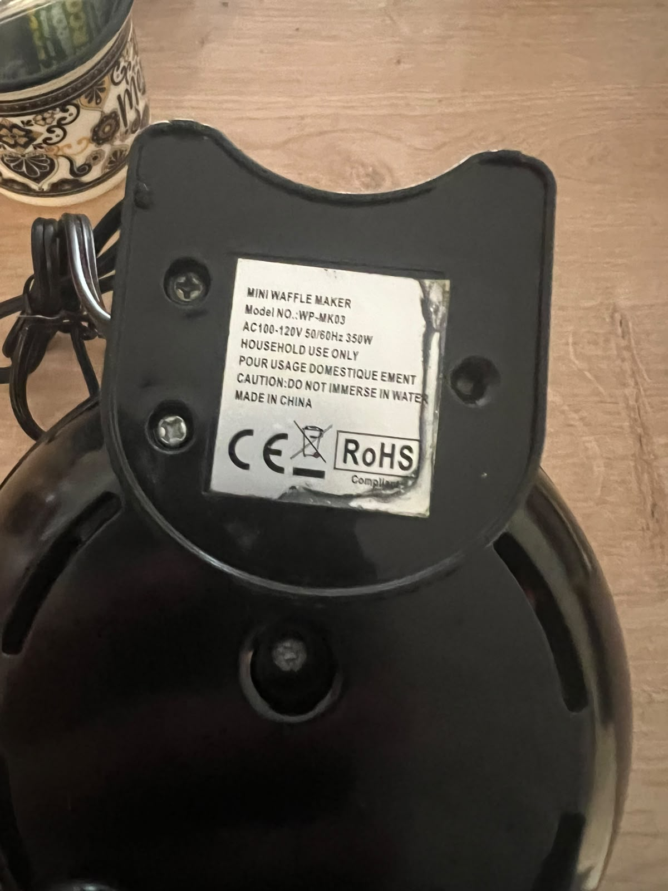

Consumo por equipo
| Equipo | Potencia (W) | Horas de uso por día | kWh en la semana | Costo en la semana (COP) | |
|---|---|---|---|---|---|
| Lunes a viernes | Sábado y domingo | ||||
| Nevera Mabe RMP421FGCC | 42 (promedio) | 24 | 24 | 7,070 | 6.775,75 |
| Airfryer Imusa LF13-M | 1450 | 0,5 | 1 | 6,525 | 6.253,43 |
| Sandwichera Imusa SJ331856 | 850 | 0,25 | 0,5 | 1,913 | 1.832,90 |
| Licuadora Oster BLST4655-013 | 700 | 0,25 | 0,25 | 1,225 | 1.174,02 |
| Mini waflera WP-MK03 | 350 | 0 | 0,5 | 0,350 | 335,43 |
| Total de la semana | 17,083 | 16.371,53 | |||
Fórmula: potencia (W) × horas de uso ÷ 1000 = kWh. Para la nevera se usó el dato de su etiqueta: 30,30 kWh al mes, es decir, 7,07 kWh por semana. Las horas de uso son estimadas.
Fotos de las etiquetas
| Foto de la etiqueta | Equipo | Marca y modelo | Dato de la etiqueta |
|---|---|---|---|
|
 |
Nevera | Mabe RMP421FGCC | 30,30 kWh al mes (clase A); no indica vatios |
|
 |
Airfryer | Imusa LF13-M | 1450 W, 120 V |
|
 |
Sandwichera | Imusa SJ331856 | 850 W, 127 V |
|
 |
Licuadora | Oster BLST4655-013 | 700 W, 127 V |
|
 |
Mini waflera | WP-MK03 | 350 W, 100-120 V |
¿Qué equipo gasta más?
Nevera Mayor consumo
7,070 kWh en la semana
Airfryer Más gasta por hora
6,525 kWh en la semana
La nevera: aunque su potencia es baja, está encendida las 24 horas y consume cerca del 41 % de la energía de la semana. Le sigue la airfryer (38 %): es el equipo que más gasta por cada hora de uso, pero la uso poco.
Estos cinco equipos suman unos 76 kWh al mes. Compárelos con el consumo real en la página Mi factura.